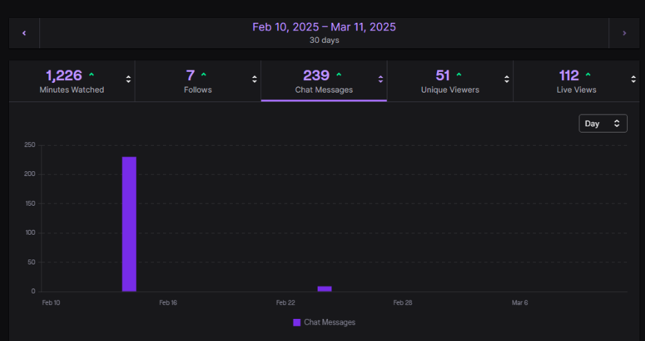
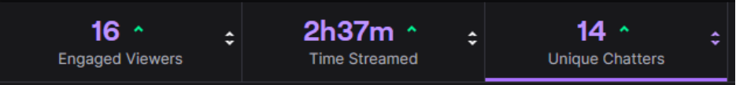
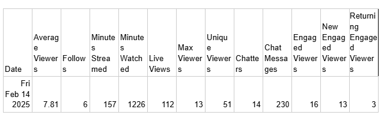

As the title of the stream suggests, the live video involved gaming and (deep dive) discussions. The live stream has multiple sessions of gaming starting off with a horror Roblox game called “Subconscious”,
and the second game called “Squid Game” having roughly the same mechanics as the Korean TV Show. During the gaming sessions, a wheel of names was spun that had the list of the members present in the stream,
whoever got picked from the wheel needed to answer a question related to different topics about gaming as a general. To end the live stream, the viewers that were still present at that time were given the chance
to join the server where the group was playing to enhance engagement and overall entertainment.
Starting off with the device used; this part of the stream is essential, as it supports the entire stream and is the technical backbone of all of it.
A sufficient device will allow a high quality stream without the presence of technical issues such as a laggy or buffery stream, fps drops, insufficient bitrate, and low resolution.
The device's details can be found below:
Intel Core i7-8750H CPU
Processing unit
GeForce GTX 1060 GPU
Graphics card
144 Hz 1080p ips
Monitor
16 GB ram
Memory
The device's specs will suffice, as the device will not only stream, but will have to be able to handle
running multiple other programs for the stream: Roblox, Discord, Spotify, etc.
The stream is set up with Streamlabs OBS which is an open source streaming platform that uses obs and adds on numerous chat overlays, alerts, and many more that allow for
varied customization of the stream,
allowing it to be designed to be "connected" to the stream since the bare version of OBS lacks the lively chat overlays, alerts, and more.
The stream used images designed from canva, and overlay gifs which were placed using the image feature of Streamlabs Obs. Then chat overlays were placed beside the shared
screen display to display chat without the viewer needing the check twitch's built-in overlay, while also enabling the ability to see chat in clips of the stream.
Stream starting soon screen
Start of the stream.
Spin the wheel
Roblox horror gameplay
Game switch
Viewers join the game as players
Roblox Squid Game
Throughout the stream, the streamers had a discussion about the effects of video games on their lives and social behavior,and periodically asked the chat about the discussion, and what games they wanted to play.
The stream had a healthy amount of viewers, unique viewers, chatters, and engagement. See Figure A and B. The exported data from Twitch can then be transposed to a table. See Table A.
The stream went sub-smoothly with minor inconveniences such as a late member of the stream, delayed schedule, and such. Future streams could use better preparation, layout, planned discussion,
and a set game list to not only clear disagreements about which games to play, but to also keep the stream’s momentum up and running as intermissions can only last so
long before your stream starts to lose engagement. Future upgrades and considerations can also include: Chat moderators for spam bots, a better title, a device upgrade, as the
streamer was not able to watch the gameplay he is streaming without the gameplay lagging itself, therefore having to use another device to check the stream, custom emojis,
and so much more. The more expensive options are only viable for already experienced streamers with a loyal fanbase, a healthy schedule, a high average view count, with them also
earning enough from ad revenue to be able to afford those upgrades.,
Figure A

Figure B

Table A
